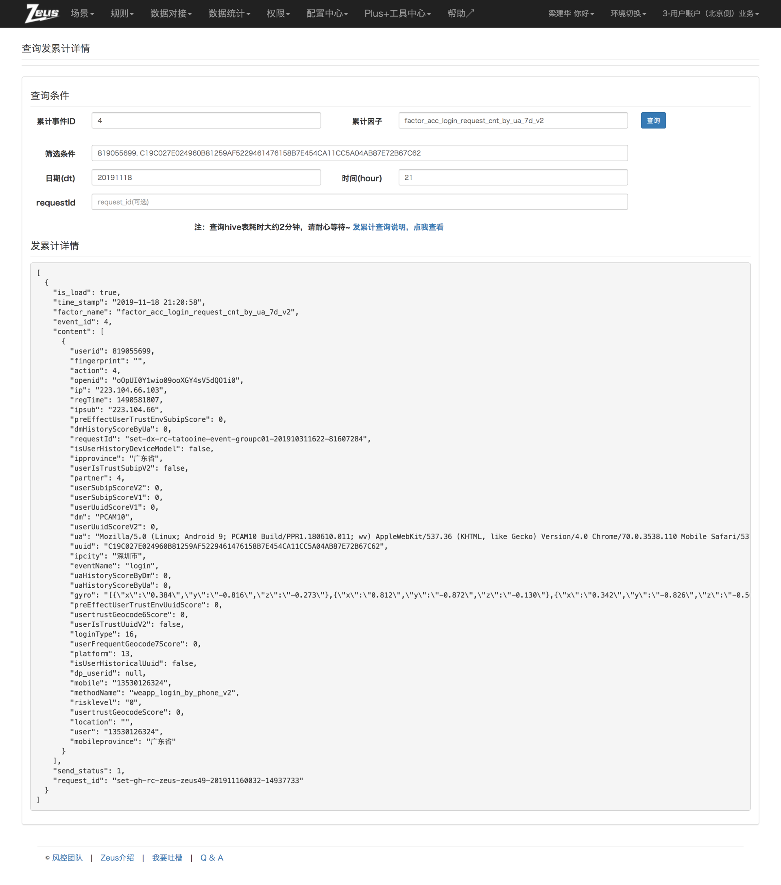

发累计查询
1、搜索条件说明
|
名称 |
必/可选 |
示例 |
说明 |
|---|---|---|---|
|
累计事件ID |
必选 |
123 |
|
|
累计因子英文名 |
必选 |
factor_acc_name |
|
|
筛选条件 |
必选 |
12353,QUHDF123 |
上下文信息里的参数值，最多同时支持两个，英文逗号分隔 |
|
日期（dt） |
必选 |
20191119 |
YYYYMMDD |
|
时间（hour） |
必选 |
17 |
24小时制 |
|
requestId |
可选 |
set-xr-rc-zeus-zeus28-201911160036-14932711 |
用于精确查找 |
2、查询结果说明
|
名称 |
说明 |
|---|---|
|
is_load |
不用关注，表示累计因子有效 |
|
time_stamp |
时间戳，发累计时间 |
|
factor_name |
累计因子英文名称 |
|
event_id |
累计事件ID |
|
content |
发送累计的上下文信息 |
|
send_status |
是否满足发送累计条件，0=不满足，1=满足 |
|
requestId |
requestId |
3、查询示例
